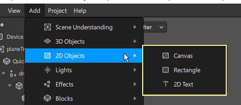

The Canvas The canvas is an object that will scale in size depending on the device screen.
2D objects like rectangles or 2D text will always be children of a canvas. This means they'll scale in sync with the screen of the device.
Note:
In order to add any 2D element like a rectangle or text to the effect, you’ll need to add a Canvas. The canvas will always be the parent of these elements.
If you add a 2D element directly, a Canvas will be automatically added for you by Spark AR Studio.
Rectangle
A rectangle is a 2D shape in Spark AR Studio. You can use it to render textures and materials, creating 2D effects like frames, backgrounds and colored overlays in your effect.
2D text
With this element, you can bring in text to your effect, even custom fonts that you’d like to use.

Adding a frame
Add canvas to scene and rename it
>Add rectangle to scene
>Import Asset(the downloaded png file)
>Textures cannot be directly applied onto objects, for this we need to setup a Material.
>Add a material and assign the png file as texture to material
>
Now select the rectangle and on the Inspector Panel, click on the + in the Materials tab.
Assign the material
You should see the frame appear on the screen now.
Let’s adjust a few settings to make sure it adjusts itself to different resolutions -
>
Select Rectangle in the Scene panel and in the Inspector panel, set the Pinning and Flexibility options to the following:
This makes the rectangle fit to every device screen.
>Put alpha test on for material (in case PNG isn't transparent)